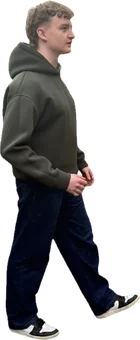

A character for the whole portfolio
I wanted the portfolio to have a face, so the cartoon version of me works almost like a mascot. He looks the same everywhere: the curly hair, the grey T-shirt, the navy trousers and the black and white trainers. He watches you in the menu, runs in the mini game and holds up the scratchcard. Alongside him is my actual GREENER logo, which carries through the site, the receipt and the scratchcard, down to the G monogram hidden in the silver. It's all one brand, so every piece feels like it came from the same person, because it did.